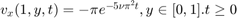

HW 4.2.7
Contents
Neumann-boundary-value Problem
- 
- where
- \nu = 1$
Numerical Solution
ts = [0.06, 0.1, 0.9];
ts = [0.06, 0.1, 0.9];
% dx = 0.1; dy = 0.1; dt = 0.001;
dx = 0.1; dy = 0.1; dt = 0.001;
[u, X, Y] = solver_4_2_7(dx, dy, dt, ts);

Code: Solver of Functionn
function [u, X_, Y_] = solver_4_2_7( dx, dy, dt, slices )
f_ = @(X, Y)(sin(pi * X) .* sin(2 * pi * Y));
nu = 1;
g_ = @(y, t)( -pi * exp(-5 * nu * pi * pi * t) .* sin(2 * pi * y) );
slices_id = round(slices / dt);
X = round(1 / dx);
Y = round(1 / dy);
x = 1; y = 1;
Mx = x * X; My = y * Y; rx = nu * dt / dx / dx;
ry = nu * dt / dy / dy; x_ = 0 : dx : x;
y_ = 0 : dy : y;
[X_, Y_] = meshgrid(x_, y_); u = zeros(size(X_));
u_t = zeros(size(X_)); A_0 = ry * ones(1, length(y_));
A_1 = ry * ones(1, length(y_) - 1);
A = -2 * diag(A_0) + diag(A_1, 1) + diag(A_1, -1); B_0 = rx * ones(1, length(x_));
B_1 = rx * ones(1, length(x_) - 1);
B = -2 * diag(B_0) + diag(B_1, 1) + diag(B_1, -1); for id = 1 : max(slices_id)
t = id * dt;
u(:, 1) = zeros(size(u(:, 1)));
u(1, :) = zeros(size(u(1, :)));
u(:, end) = zeros(size(u(:, end)));
u(end, :) = u(end - 1, :) + g_(y_, t) * dx;
u_t = u + A * u + u * B;
if (any(id == slices_id))
plotSlice_4_2_3(u_t, X_, Y_, dt, id);
end
u = u_t;
end
endCode: Value of Slices
function plotSlice_4_2_3(u, X_, Y_, dt, id) figure; hold on; title(sprintf('t = %.2f', id * dt)); mesh(X_, Y_, u); view(3); xlabel('x'); ylabel('y'); zlabel('u(numerical)'); end